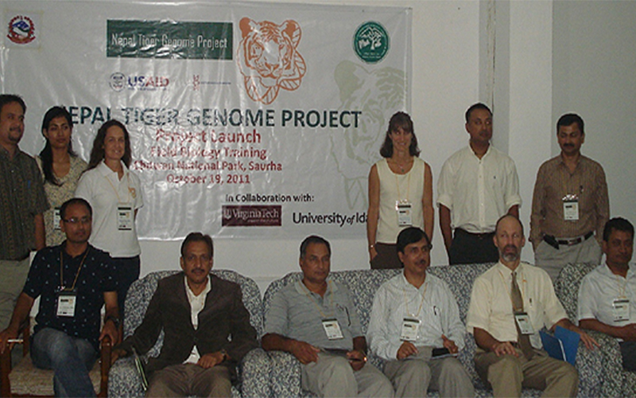
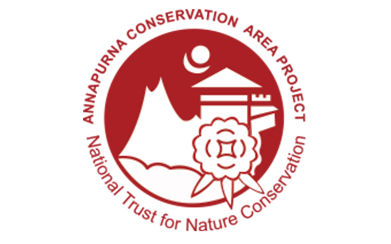
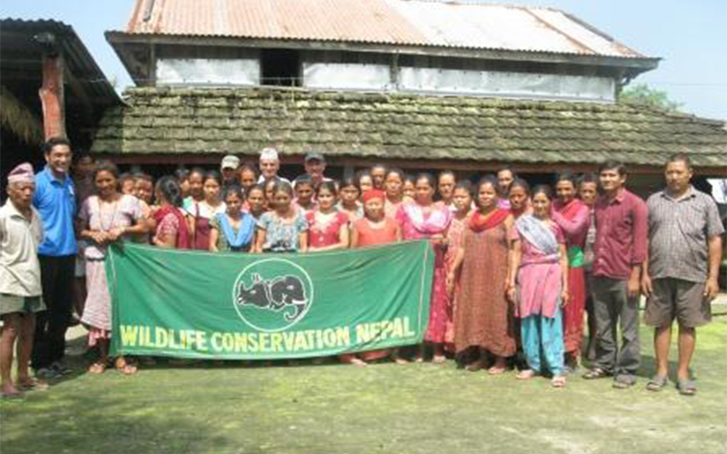

Tiger protection project launched
-

Genome project for four major tiger habitatsSAURAHA (CHITWAN), OCT 19 - In an attempt to facilitate the conservation of the Royal Bengal Tiger, a highly endangered species, USAID Nepal, in support from the government, on Wednesday formally launched a two-year research programme named Nepal Tiger Genome Project. The project to be implemented in four major tiger habitats in the country—Bardiya National Park, Chitwan National Park, Shuklaphanta Wildlife Reserve and Parsa Wildlife Reserve—aims to develop genome-based tools by introducing the latest technology in molecular scatology to address the challenges of tiger conservation in Nepal. The government has set an ambitious goal of doubling the existing tiger population by 2022. The molecular scatology will employ a scientific and conservation-friendly method of extracting DNA of tigers from non-invasively collected scat samples. The project will conduct Nepal’s first genetic study on the tiger species that involves collection and preservation of scat, genetic and statistical analysis, and building a geo-spatial database, said Diwesh Karmacharya, a researcher associated with the project.An estimated 155 adult tigers are known to inhabit the four protected areas of the Tarai Arc Landscape of Nepal. Findings of this research are expected to facilitate a better understanding of the genetic diversity and area populations of tiger species that will be useful for designing effective conservation policies and strategies at local, national, and international levels, said a statement issued by the USAID on Wednesday. The Centre for Molecular Dynamics Nepal is implementing the project.
Annapurna Conservation Area Project
-

Most trekkers hear about ACAP the first time when they enter the Immigration Office in Bhrikuti Mandap, Kathmandu, to get a trekking permit to different trekking areas in Nepal. You are required to pay a fee to get into any national park or conservation area that falls under Annapurna Conservation area.
ACAP was launched in 1986 with the initiation of *King Mahendra Trust for Nature Conservation (KMTNC) to protect the environment with sustainable community development in Annapurna area by the local people without any intervention from the Nepalese Government and/or any other institutions. This is the first and the largest conservation area in Nepal that covers 7,629 sq. km. The head office of ACAP is in Ghorepani that lies at an elevation of 2775m. ACAP office in Kathmandu is situated in Sanchaya Kosh building in Tridevi Marg, Thamel. Approximately 25,000 trekkers visit the Annapurna region every year and the trekking fee collected from the tourists supports more than 40,000 local people. Thus, ACAP with the participation of the trekkers have been able to increase the standard of living of the local population, protect the environment and develop sustainable tourism.
ACAP is divided into seven unit conservation offices and spread out in 5 districts of the Western Development Region of Nepal covering 55 Village Development Committees. Each village development committee is assigned to carry out the responsibilities to manage, utilize and protect all the natural resources within the respective VDCs.
Awareness programs on Rhino-Tiger Conservation
-

September 03, 2012Wildlife Conservation Nepal (WCN) conducted awareness programs on Rhino-Tiger Conservation in different communities which lie in the buffer zone of Chitwan National Park from August 30th - September 3rd, 2012. WCN launched these awareness programs to involve local communities in conservation of mega-vertebrates and to deter community members from poaching activities.